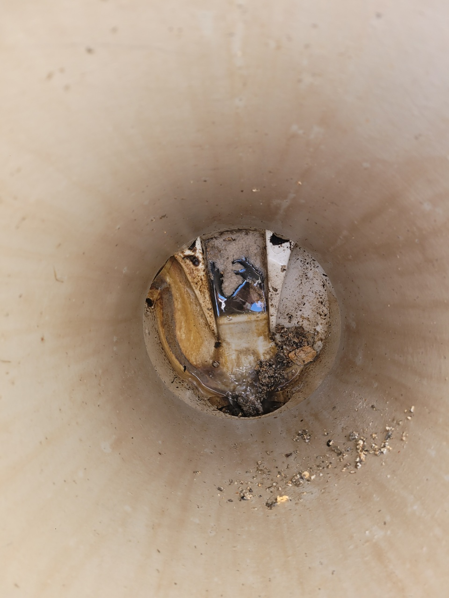
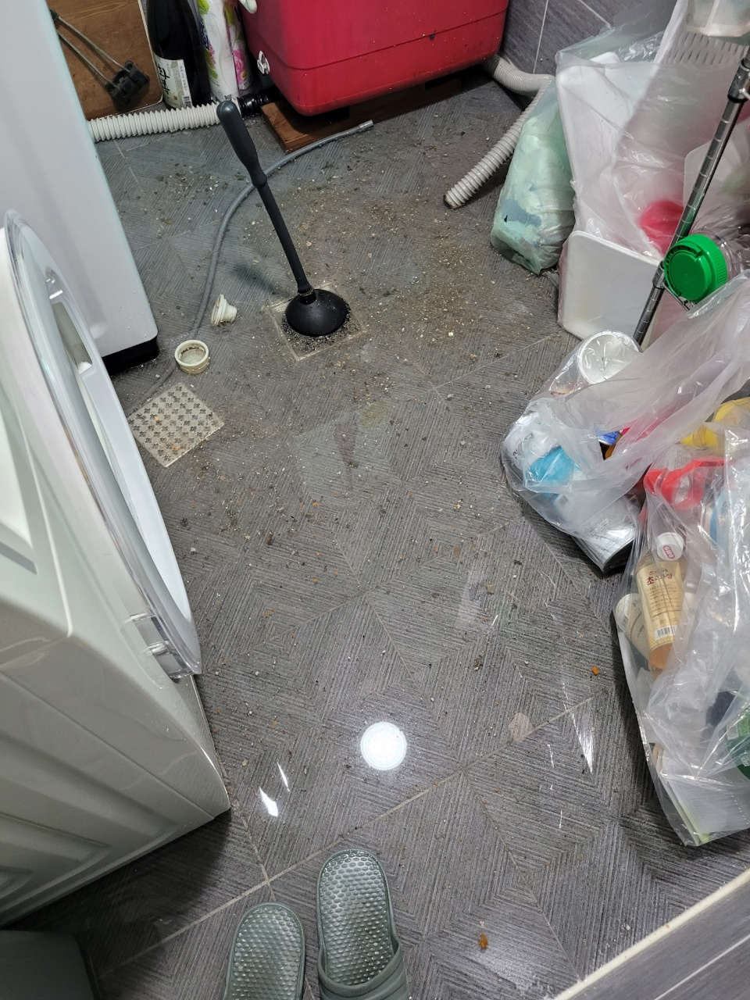
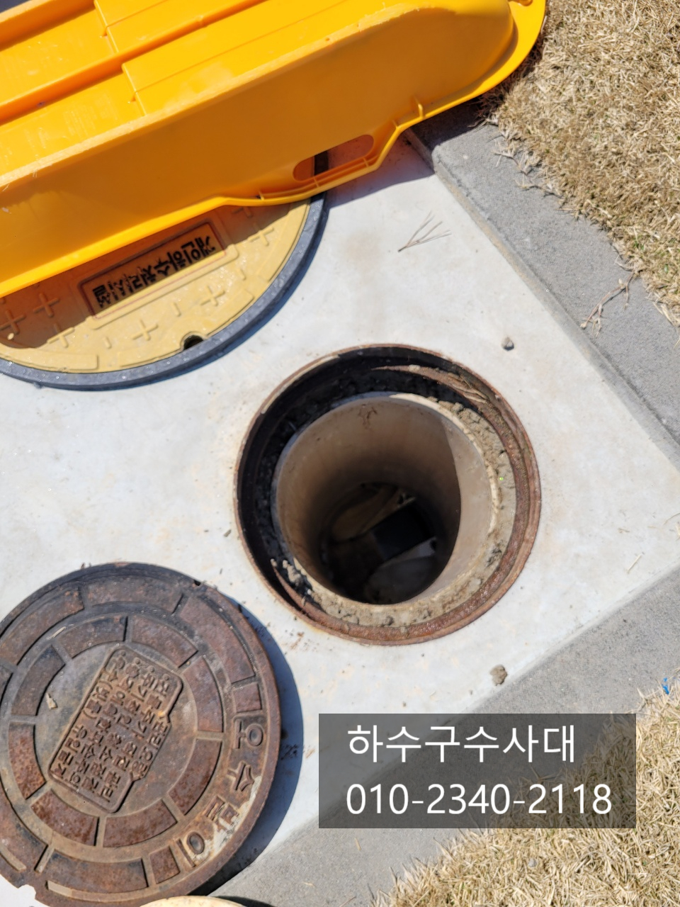
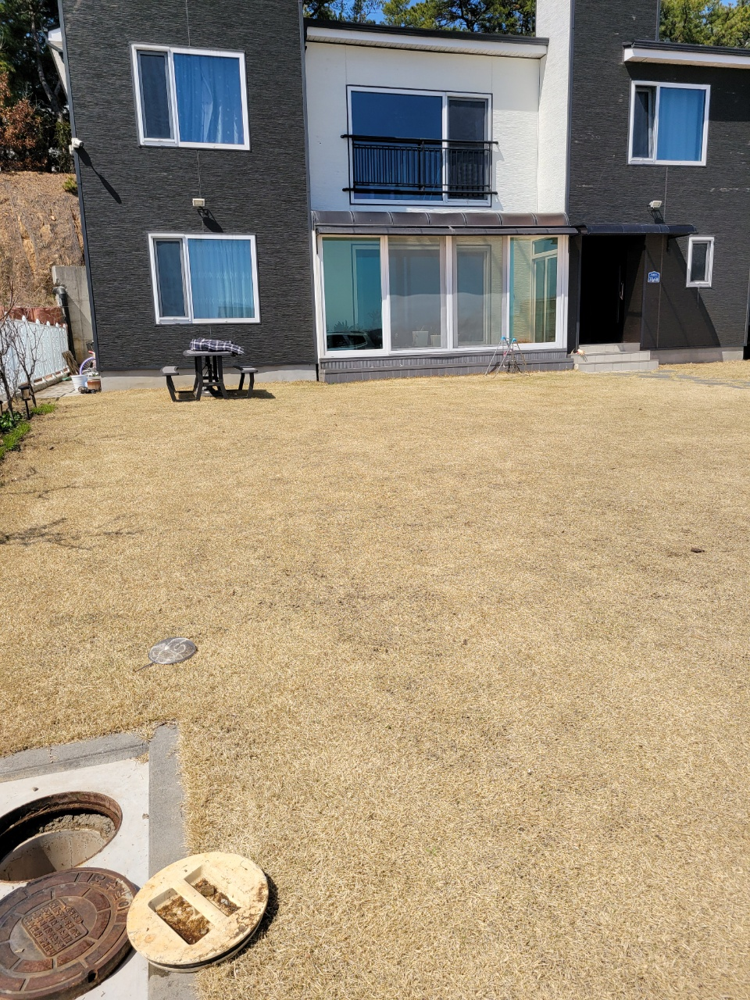
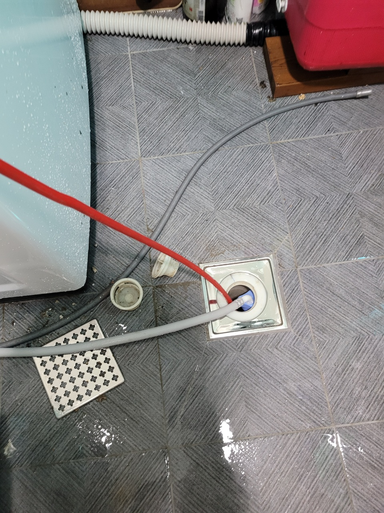
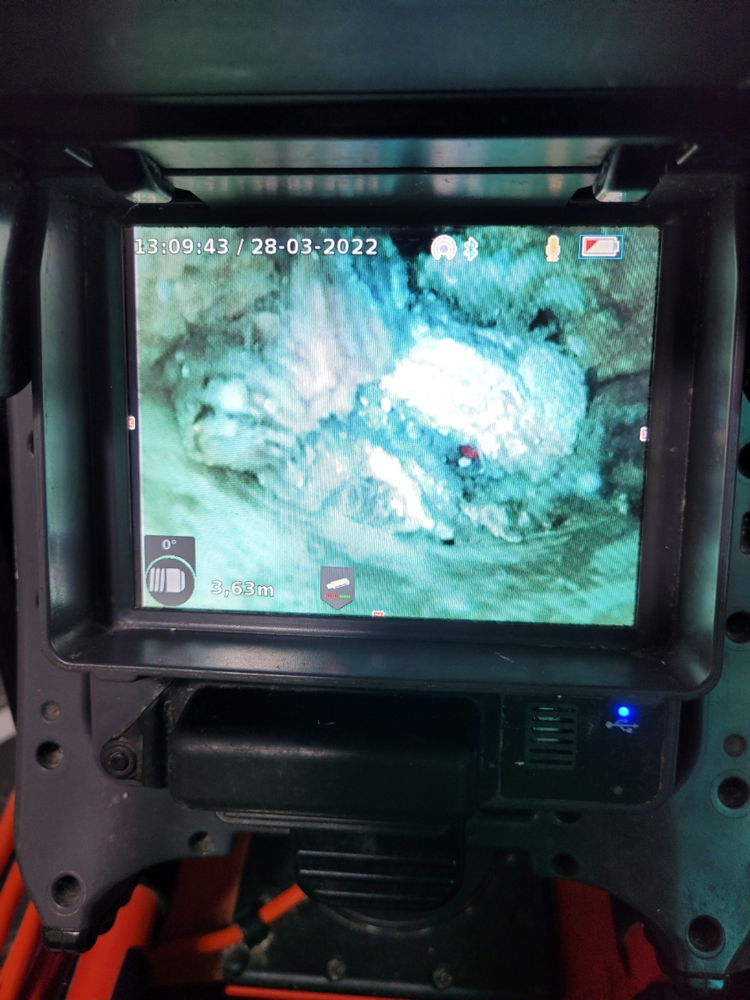
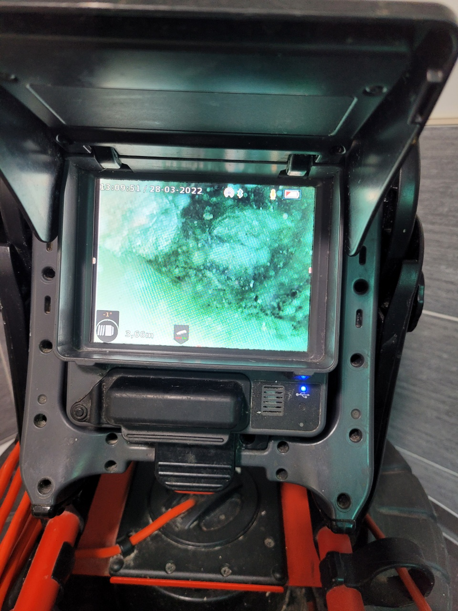
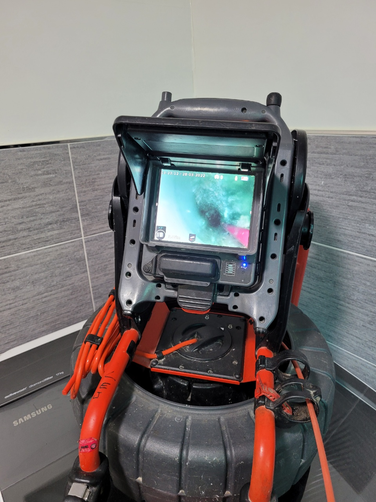

🏠 화성시 하수구 뚫음 향남읍 정남면 팔탄면 하수구 확실하게 뻥!
화성 향남 싱크대막힘 전문 시공 후기

📋 작업 개요
- 위치: 화성 향남, 향남, 화성
- 서비스 유형: 싱크대막힘, 하수구막힘, 배관막힘, 뚫는업체
- 작업 일시: 2022. 4. 3. 20:33
- 업체명: 하수구수사대 (010-5615-2118)
🔍 문제 상황
화성시 하수구 뚫음 향남읍 정남면 팔탄면 하수구
날씨가 점점 포근해지더니
언제 피었는지 모를
벚꽃이 흐드러지게
피기 시작했습니다.
지금 날씨는 정말
야외 나들이 가기에
너무 딱 좋은데요.
안타깝게도 수그러들지 않는
코로나로 인해
사람이 붐비는 축제 같은 곳은
아직은 도전하지 못할 것 같아요.
그렇지만 한가로운 야외를
드라이브 로라도
만끽하시기를 바랍니다.
우리는 일상생활을 하면서
물을 참 많이 사용합니다.
세수를 하거나 샤워를 하거나
또는 설거지를 하거나
세탁기를 돌리는 등
날마다 빼놓지 않고
물을 사용하는데요.
이렇게 사용한 물은
배수구를 통하여
집 밖으로 빠져나가도록
되어 있습니다.
그런데 이때 배수가 잘 되지
않는다면 어떻게 될까요?
당연히 물을 사용하는데

🔎 원인 분석
💡 전문가 진단: 하수구수사대최신장비보유!1년as 보장!주말,공휴일도 ok!010-2340-2118
굉장히 번거로워지게 됩니다.
오늘은 화성시 하수구 뚫음
향남읍 정남면 팔탄면 하수구
현장을 찾았습니다.
세탁실 바닥에 있는
배수구에서 물이 빠져나가지
않는다는 문의가 왔기 때문이에요.
다들 아시다시피
세탁기를 돌릴 때에는
엄청난 양의 물이
배수되어야 합니다.
그러나 하수구가
제대로 역할을 하지 못한다면
물난리가 날 수밖에 없어요.
그렇기 때문에 불편함을
빠르게 해소해 드리기 위하여
한걸음에 달려갔습니다.
현장에 도착해서 보니
세탁실 바닥에는 이미
물이 흥건하게 젖어 있었습니다.
세탁기 아랫부분까지
물에 침수되어 있는 상태였어요.
다행히 배수가 안 되는 것을
발견하신 고객님께서
작동을 정지해 놓았기 때문에
최악의 상황은
피해 갈 수 있었습니다.
화성시 하수구 뚫음
작업을 바로
시작해 보도록 하겠습니다.

🔧 작업 과정
가장 먼저 하수구 내부의 상황을
확인하기 위하여
카메라를 사용하였습니다.
간혹 감으로 뚫는다는
업체들도 있기는 하지만
슬기로운 하수구생활은
좀 더 과학적이고 확실한 방법으로
작업을 진행하기 위하여
첨단 장비를 동원하고 있는데요.
이렇게 눈으로
직접 내부를 확인할 수 있기 때문에
어떤 것이 문제인지
정확히 진단할 수 있고
그에 맞는 작업을
진행할 수 있기 때문에
더 빠르게 뚫을 수 있게 됩니다.
문제의 위치를 찾은 후에는
바로 작업을 시작합니다.
내부에 어떤 덩어리가
보이는데요.
의뢰를 주신 고객님의 댁이
잔디 마당이 넓은
전원주택이었기 때문에
날씨 혹은 다양한 이유로 인하여
하수구 중간에
문제가 발생할 수 있어서
마당에서도 함께
작업을 진행했습니다.
향남읍 정남면 팔탄면 하수구를
빠르게 뚫었어요.
배관의 기울기가 좋다면 기름기가 붙기
어려운데요 오늘 방문한 현장의 배관기울기가
좋지않아 물이 고여있는 구간이 길었답니다.
그렇다보니 싱크대에서 사용하여 흘러나가는
기름들이 정체되고 조금씩 쌓여 기름덩어리가
되었어요.
기름덩어리는 남아있다면 또 막힐수있고
하수구악취 또한 심하기 때문에
모두 제거하는게 좋답니다.
작업이 끝난 후
카메라를 통하여
배수관 내부를 확인하였더니
역시나 시원하게 뚫린 것을
확인할 수 있었습니다.
막힌 것을 제거하자마자
세탁실 바닥에 고여 있던 물이
시원하게 배수되었습니다.
고객님께서도


✅ 작업 완료
참 만족해하셨는데요.
오늘처럼 막힌 하수구로 인하여
불편하시다면 고민하지 마시고
바로 연락 주세요!
가장 빠르게 달려가서
확실하게 뚫어드리겠습니다.
하수구수사대
최신장비보유!
1년as 보장!
주말,공휴일도 ok!
010-2340-2118
경기도 화성시 효행로 1060 10층 1004-A246호




⚠️ 주방 싱크대 배관 막힘 예방 수칙
- ✅ 기름기가 묻은 식기나 프라이팬은 설거지 전 키친타올로 반드시 기름때를 닦아내세요.
- ✅ 주기적으로 싱크대 개수대에 뜨거운 물을 가득 받아 한 번에 내려 배관 내부 기름을 씻어내세요.
- ✅ 배수구 거름망을 미세한 필터로 사용하시고 음식물 찌꺼기가 틈으로 새어 들지 않게 관리하세요.
- ✅ 베이킹소다와 식초를 뜨거운 물과 함께 일주일에 한 번씩 부어주면 배관 살균과 막힘 예방에 좋습니다.
💡 핵심 정리
- 확실한 장비 작업(내시경 점검 및 샤프트 스케일링)으로 원인을 뿌리 뽑습니다.
- 작업 후 1년 이내에 동일한 부위 재발 시 100% 무상 A/S 서비스를 보장합니다.
- 서울 · 경기 · 인천 전 지역에 24시간 언제든 긴급 출동할 수 있도록 항시 대기 중입니다.
❓ 자주 묻는 질문 (FAQ)
🚨 화성 향남 싱크대막힘 문제로 고민이신가요?
정확한 원인 진단과 확실한 시공으로 재발 없는 해결을 약속드립니다.
24시간 긴급 출동 | 서울 · 경기 · 인천 전지역 | 1년 내 재발 시 무상 A/S